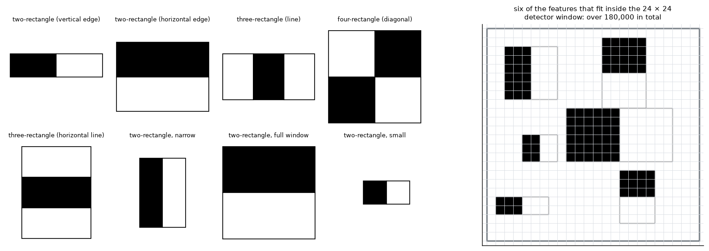
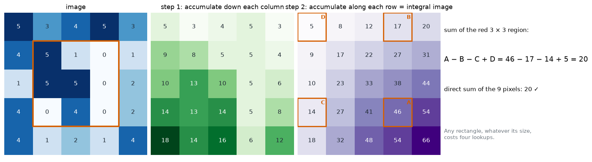
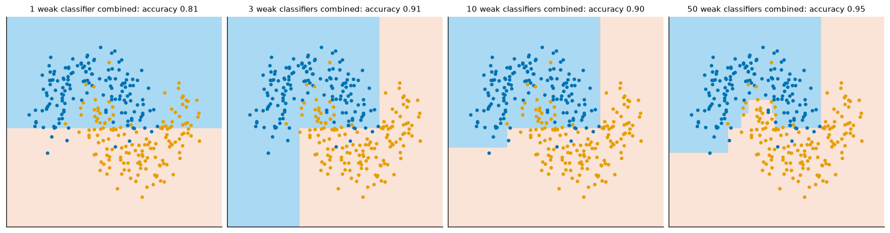
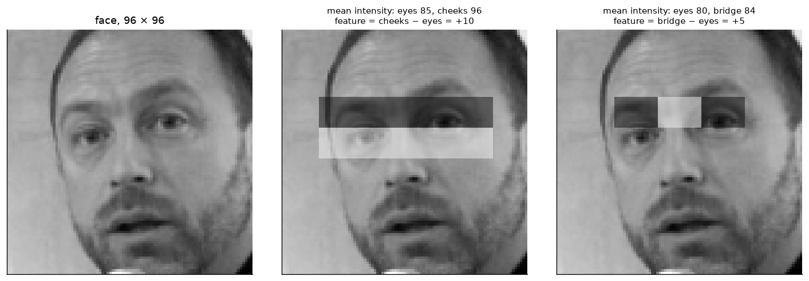
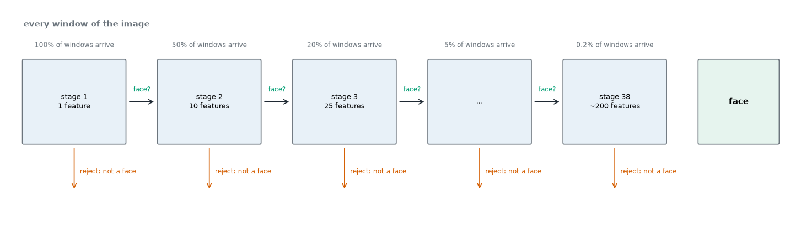
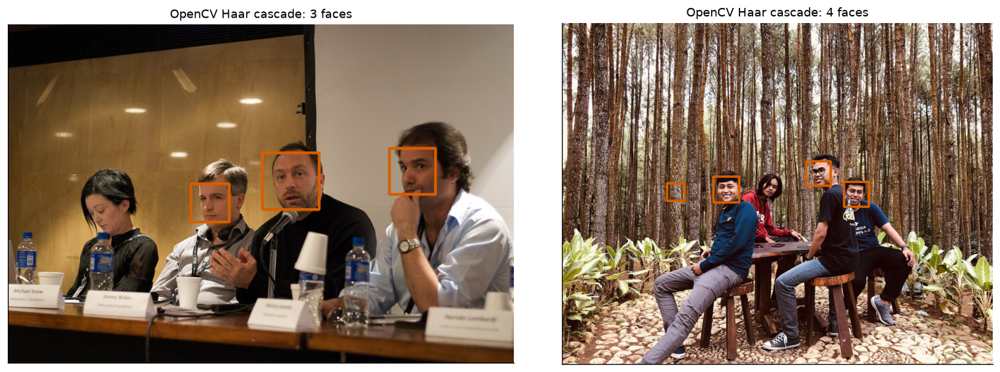

Lesson 04.05
The Viola-Jones algorithm
Fast face detection from Haar-like rectangle features computed with the integral image, selected and combined by AdaBoost, and arranged in an attention cascade that rejects background windows early.
Learning outcomes
After this lesson you should be able to:
- describe Haar-like features and how many arise inside a detector window;
- construct an integral image and use it to sum any rectangle with four lookups;
- explain how AdaBoost selects and combines weak classifiers;
- explain the attention cascade and why the algorithm is fast at detection but slow to train.
The Viola-Jones algorithm
Viola-Jones is an extremely well-known object detector, associated above all with face detection in early digital cameras and phones, though it can be trained for other categories such as road signs. It is a feature-engineering approach with four key ideas: simple Haar-like features for discrimination, the integral image for fast feature computation, a boosted classifier that combines many simple classifiers, and a cascade of classifiers that speeds up detection. It is computationally efficient enough for embedded devices.
Haar-like features
The detector window is usually 24 × 24 pixels and is slid across the image in an exhaustive search. Within it a large number of Haar-like features are evaluated. Each feature is a pattern of adjacent black and white rectangles: the feature value is the sum of the pixels under the white rectangles minus the sum under the black ones, and depending on the pattern it responds to an edge, a line or a diagonal contrast. Every feature type can be scaled and shifted anywhere in the window; applying all positions and scalings of the seven basic types to a 24 × 24 window gives over 180,000 candidate features. No single feature can detect a face; only a combination of very many can, which means a lot of computation.

Worked example 1: Haar-Like Feature Computation
The image $I$ and its pre-computed integral image $II$ are given below (0-indexed rows and columns).
$$I = \begin{bmatrix}12 & 1 & 2 & 3 & 2 & 12 \\ 13 & 9 & 0 & 1 & 5 & 6 \\ 9 & 7 & 4 & 2 & 11 & 11 \\ 0 & 1 & 7 & 6 & 14 & 8 \\ 6 & 6 & 10 & 9 & 2 & 11 \\ 12 & 15 & 12 & 4 & 5 & 10\end{bmatrix}$$
$$II = \begin{bmatrix}12 & 13 & 15 & 18 & 20 & 32 \\ 25 & 35 & 37 & 41 & 48 & 66 \\ 34 & 51 & 57 & 63 & 81 & 110 \\ 34 & 52 & 65 & 77 & 109 & 146 \\ 40 & 64 & 87 & 108 & 142 & 190 \\ 52 & 91 & 126 & 151 & 190 & 248\end{bmatrix}$$
A vertical-edge Haar feature is defined with two rectangles, each of height $h = 4$, width $w = 3$, with top-left corner $(r_0, c_0) = (0, 0)$ (0-indexed).
Feature $=$ sum(right rectangle) $-$ sum(left rectangle).
Four-corner formula for a rectangle with inclusive bounds $(r_1, c_1)$ to $(r_2, c_2)$:
$$\text{rect\_sum}(r_1,c_1,r_2,c_2) = II_{r_2,c_2} - II_{r_1-1,c_2} - II_{r_2,c_1-1} + II_{r_1-1,c_1-1}$$
(Any term whose index falls below 0 is taken as $0$.)
Compute the Haar feature value.
Show the solution
Step 1 - Compute rectangle sums.
Rectangle 1 — left ("black"): rows $[0,\,3]$, cols $[0,\,2]$
- $II_{3,2} = 65$
- $r_1 = 0$: top boundary term $= 0$
- $c_1 = 0$: left boundary term $= 0$
- Corner boundary term $= 0$
$$\text{sum} = 65 - 0 - 0 + 0 = 65$$
Rectangle 2 — right ("white"): rows $[0,\,3]$, cols $[3,\,5]$
- $II_{3,5} = 146$
- $r_1 = 0$: top boundary term $= 0$
- $II_{3,2} = 65$
- Corner boundary term $= 0$
$$\text{sum} = 146 - 0 - 65 + 0 = 81$$
Step 2 - Haar feature value.
Feature $=$ sum(right rectangle) $-$ sum(left rectangle):
$$\text{Feature} = 81 - 65 = 16$$
The integral image
Each feature needs the sum of the pixels under each of its rectangles: 4 additions for a 2 × 2 rectangle, 9 for 3 × 3, 16 for 4 × 4, and so on. To avoid this cost the authors introduced the integral image, also called the summed-area table. It is computed once per window in two passes: accumulate the sum down each column, then accumulate along each row of the result. Each entry then holds the sum of all pixels above and to its left, which is easy to check by direct summation. The sum of any rectangle, whatever its size, is obtained from just four entries at its corners,
$$\text{sum} = A - B - C + D, \tag{1}$$
so larger features cost no more than small ones.

Worked example 2: Integral Image
Obtain the integral image of
$$I = \begin{pmatrix}3 & 4 & 4 & 3 & 6 \\ 3 & 4 & 3 & 3 & 6 \\ 2 & 4 & 3 & 5 & 5 \\ 2 & 5 & 5 & 3 & 1 \\ 4 & 1 & 6 & 6 & 6\end{pmatrix}$$
Then use the integral image to find the sum of pixels in the centre $3\times 3$ region (rows 2–4, columns 2–4, 1-indexed). Express your answer in the form $A-B-C+D$ where $A, B, C, D$ are values from the integral image.
Show the solution
Step 1 – Column cumulative sums.
Sum each column from top to bottom to form intermediate image $I_1$:
$$I_1 = \begin{pmatrix}3 & 4 & 4 & 3 & 6 \\ 6 & 8 & 7 & 6 & 12 \\ 8 & 12 & 10 & 11 & 17 \\ 10 & 17 & 15 & 14 & 18 \\ 14 & 18 & 21 & 20 & 24\end{pmatrix}$$
Step 2 – Row cumulative sums.
Sum each row of $I_1$ from left to right to produce the integral image $I_I$:
$$I_I = \begin{pmatrix}3 & 7 & 11 & 14 & 20 \\ 6 & 14 & 21 & 27 & 39 \\ 8 & 20 & 30 & 41 & 58 \\ 10 & 27 & 42 & 56 & 74 \\ 14 & 32 & 53 & 73 & 97\end{pmatrix}$$
Step 3 – Extract region sum using four corners.
For the centre $3\times 3$ region (rows 2–4, cols 2–4, 1-indexed):
| Symbol | Position (0-indexed) | Value |
|---|---|---|
| $A$ | row 3, col 3 (bottom-right of region) | $56$ |
| $B$ | row 0, col 3 (above region, same col) | $14$ |
| $C$ | row 3, col 0 (left of region, same row) | $10$ |
| $D$ | row 0, col 0 (above-left corner) | $3$ |
$$\text{Sum} = A - B - C + D = 56 - 14 - 10 + 3 = 35$$
(Direct verification: summing the 9 values in the centre $3\times 3$ patch also gives 35 ✓)
Classification with AdaBoost
Individually a rectangle feature is a very weak binary classifier: it merely detects a contrast difference somewhere in the window. During training only the best-performing weak classifiers, and hence features, are retained and combined using the AdaBoost algorithm. AdaBoost trains weak classifiers in sequence, each concentrating on the examples the previous ones misclassified, and combines their weighted votes into an accurate overall classifier. In Viola-Jones the pool of 180,000 features is reduced to about 6,000 selected ones, still a large number.

Interpreting the selected features
The rectangle features AdaBoost selects first are easily interpreted. The first exploits the fact that the eye region is darker than the top of the nose and the cheeks; the second that the eyes are darker than the bridge of the nose between them.


The attention cascade
Even after selection, evaluating all 6,000 features in every window is expensive, and most windows of an image contain no face at all. The remedy is a cascade of classifiers grouped into stages. In the original detector there are 38 stages, with 1, 10, 25 and 50 weak classifiers in the first four. Training is modified to build the cascade so that the classifiers with the lowest false-negative rate, those least likely to miss a face, come first. A window is rejected as soon as any stage rejects it, so empty and background regions are discarded after one or a few feature evaluations and no time is spent on the remaining stages.

Training and use
Viola-Jones is slow to train but, because of its structure, fast to run. Training needs a labelled set of face and non-face patches; the complete set of features is evaluated on them to produce a very large set of weak classifiers; the modified AdaBoost selects a reduced set of the best and arranges them into a cascade. At test time the cascade is applied as a sliding-window detector, with an image pyramid for scale.


Check your understanding
1. The value of a Haar-like feature is
Each feature measures a contrast difference between adjacent rectangles.
2. Approximately how many candidate features exist in a 24 × 24 detector window?
All scalings and positions of the basic types give more than 180,000; AdaBoost selects about 6,000.
3. Using the integral image, the sum of any rectangle needs how many lookups?
sum = A − B − C + D from the four corner entries, independent of size.
4. Each entry of the integral image holds
It is built by accumulating down the columns and then along the rows.
5. AdaBoost is used in Viola-Jones to
Each rectangle feature is a weak classifier; boosting selects and weights the best ones.
6. Why are classifiers with the lowest false-negative rate placed early in the cascade?
Early stages must not miss faces; they may pass some background, which later stages reject.
Practice questions
Question types from the CE6021 question bank that cover this lesson:
int_img, haar_feature.
Image credits
- Friends become family, Satndy, CC BY-SA 4.0
- Jimmy answering questions, Beatrice Murch, CC BY 3.0
Other figures are generated from synthetic data by the lesson engines.